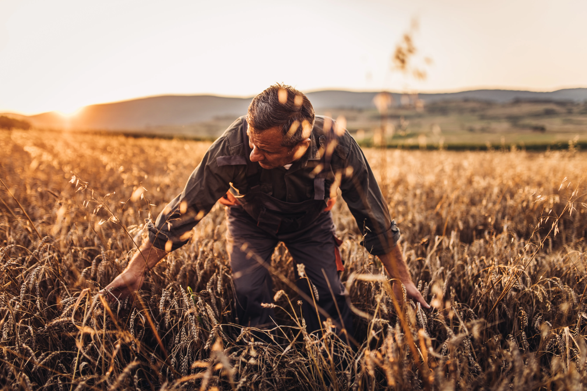
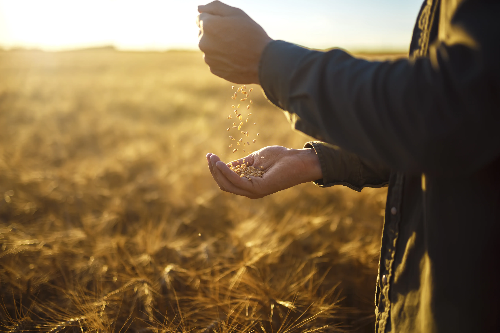

La Asociación de Procesadores de Avena tiene dentro de sus objetivos promover el mejoramiento, optimización y desarrollo de las actividades frecuentes y asociadas al rubro del procesamiento industrial de la avena.
Velamos por los intereses de todos nuestros asociados, dentro del marco de las leyes vigentes, actuando como interlocutor técnico y gremial frente a autoridades, organismos públicos y privados vinculados a la cadena de la avena en Chile.
{{ obj.text }}

Nos ocupamos del estudio de los problemas comunes de nuestros asociados y cooperamos en la solución de las dificultades que se puedan presentar a la industria procesadora de avena en general, siempre dentro del marco de las leyes vigentes en Chile.
Precio de exportación FOB: avena pelada US$ 596,0 / t · avena en hojuela US$ 648,0 / t.
La avena procesada representa el 95% del valor exportado por la industria.
Integramos cada eslabón de la cadena comercial en una alianza público–privada que impulsa el crecimiento de la industria de la avena.
Impulsar la innovación y el valor agregado en los productos de avena.
Aumentar las exportaciones y abrir nuevos mercados internacionales.
Fortalecer la imagen país a través de la avena chilena.